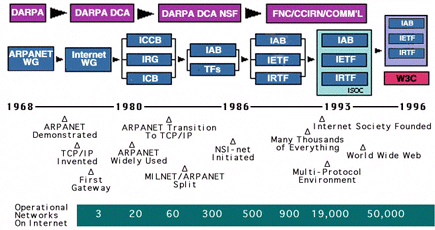

Internet
Definition
- a global system that connects computer networks around the globe using the Internet protocol
- refers to the global information system that:
- (i) linked together by a globally unique addresses space based on the Internet Protocol(IP)
- (ii) supports communication using the TCP/IP suite or its subsequent extensions/follow-ons and/or other IP-compatible protocols &
- (iii) provides, uses of makes-accesible, publicly or privately.
History

Vinton Gray Cerf - father of internet
WWW
Definition
World Wide Web
- a collection of internet resources like images, video, audio, etc. that are accessible through browsers.
- created by Tim Berners-Lee in 1989
- CERN, the European Organization for Nuclear Research, physicists and engineers are probing the fundamental structure of the universe.
History
- 12/03/1989 - Tim Berners-Lee submits a proposal for a distributed information system at CERN
- 12/20/1990 - The world's first website and server go live at CERN
- 10/01/1991 - The web extends to the high-energy-physics community
- 06/08/1991 - Berners-Lee posts a summary of the project on alt.hypertext
- 12/12/1991 - First web server outside of Europe
- 30/04/1993 - CERN releases WorldWideWeb source code
- 01/10/1994 - Tim Berners-Lee founds the World Wide Web Consortium
resources:
http://www.businessdictionary.com/definition/World-Wide-Web-WWW.html
https://en.wikipedia.org/wiki/Internet
https://www.internetsociety.org/internet/what-internet/history-internet/brief-history-internet#Origins
http://timeline.web.cern.ch/timelines/The-birth-of-the-World-Wide-Web/overlay#1989-03-12 00:00:00